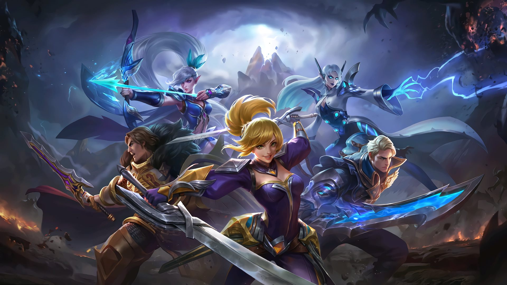
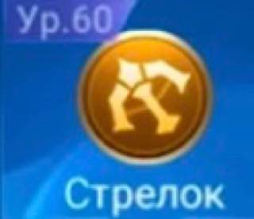
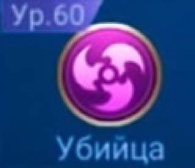
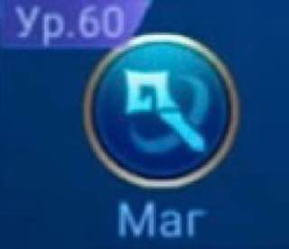
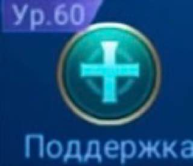
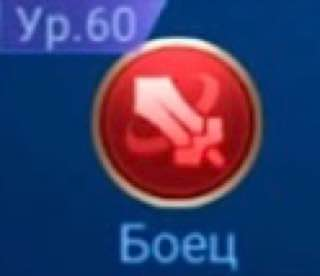
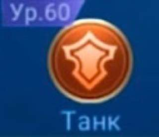

Mobile Legends

Mobile Legends: Bang Bang (сокр. MLBB; на рус. Мобильные Легенды:
Бах-Бах) — это многопользовательская
командная
видеоигра в жанре MOBA, разработанная Moonton (англ.) для мобильных устройств.
Игровой процесс
Две команды, состоящие (каждая) из 5 игроков, сражаются друг с другом, чтобы достичь и уничтожить базу
противника, одновременно защищая свою для контроля пути — трёх «линий» («верхняя», «центральная» и «нижняя»),
соединяющих базы. В игре также есть карта с изображением таймингов — «баффов» и полоской здоровья на иконке
героев.
Каждый игрок управляет своим персонажем («героем»). Более слабые управляемые компьютером персонажи, называемые
«миньоны», появляются на базах команд и следуют за тремя линиями до базы противоположной команды, сражаясь с
врагами и башнями. Также присутствует система боевых заклинаний.
Главной задачей является полное уничтожение базы противников.
Внутриигровые персонажи
Стрелок-класс дальнеатакующих героев, которые имеют большой радиус действия и высокий физический, а
также магический уроны. Герои данного класса имеют малый запас здоровья и защиты.

Убийца-класс героев, которые способны наносить большой физический и магический уроны, а также
обладающих хорошей мобильностью. Герои данного класса имеют средний запас здоровья и защиты.

Маг- класс героев, атакующих магией и имеющих разрушительный урон, а также навыки контроля и
способных оглушить одного или нескольких врагов одновременно. Герои данного класса имеют малый запас здоровья и
защиты.

Поддержка-класс героев, способных лечить или усиливать своих союзников. У данного класса, как у
магов, есть умения оглушать или препятствовать своим врагами. Герои данного класса имеют низкий запас здоровья и
защиты.

Боец-сбалансированный класс. Герои данного класса имеют средний запас здоровья и защиты, а также
высокий урон.

Танк- класс героев, требующийся для того, чтобы брать на себя весь основной удар врага и открывать
дорогу своим союзникам всех остальных классов. Герои данного класса имеют большой запас здоровья и защиты, а
также средний урон.

Режимы
Бой- это режим 5 на 5 игроков, одна линия. Начинается с третьего уровня с 1200 единицами золота. В
отличие от других режимов, нельзя ничего купить, восстановить ману и здоровье, покинув зону воскрешения.
Рейтинг-это режим, отличающийся от боя тем, что позволяет повышать свой ранг. Чем выше ранг игрока,
тем больше наград он получит в конце сезона. Каждый сезон длится три месяца, в конце последнего дня идёт
подсчёт. После достижения ранга «Эпик» появляется возможность блокировки героев (каждая команда может
блокировать по 3 героя).
Аркада-это различные режимы, которые открываются по разным мероприятиям. Основные режимы аркады:
магические шахматы, смертельная битва, безумие, зеркало, хаос, эволюция, опустошение, выживание, перегрузка.